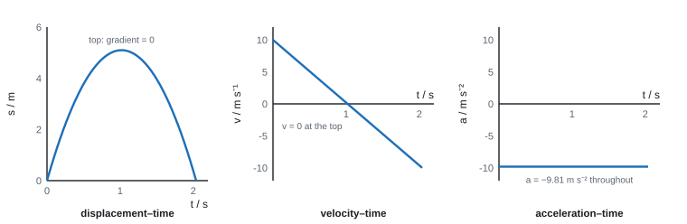
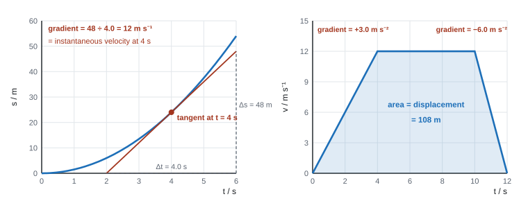
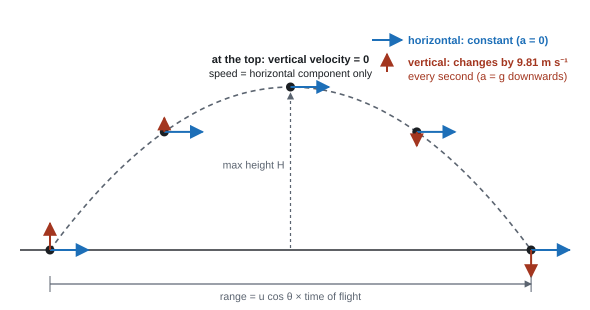

Motion
Motion is the change in position of an object over time. It can be described in terms of displacement, distance, speed, velocity, and acceleration. Understanding motion is fundamental to the study of physics as it helps explain how objects interact with forces and energy.
Spec1Equations of uniformly accelerated motion
Use the four equations of motion (suvat) for motion in a straight line with constant acceleration.
The five quantities
| Symbol | Quantity | Unit | Vector or scalar? |
|---|---|---|---|
| s | displacement | m | vector |
| u | initial velocity | m s⁻¹ | vector |
| v | final velocity | m s⁻¹ | vector |
| a | acceleration | m s⁻² | vector |
| t | time | s | scalar |
The four equations (all in the data booklet)
suvat (no \(s\))
suvat (no \(v\))
suvat (no \(t\))
suvat (no \(a\))
- They work only when acceleration is constant (this includes a = 0). Clues in a question: "constant force", "uniform acceleration", "falls freely", "air resistance is negligible".
- They don't work when the acceleration changes: a curved slide, a car with a varying driving force, anything with significant drag. Use energy or a graph instead.
- Where they come from: on a v–t graph with constant acceleration, the gradient is (v − u)/t = a, which gives v = u + at. The area (a trapezium) is s = (u + v)t/2. Combine the two and you get the other equations.
Method
- Sketch the situation. Choose a positive direction and stick to it (e.g. up = +, so g = −9.81 m s⁻²).
- List s, u, v, a, t. Write the three you know and the one you want.
- Pick the equation that leaves out the quantity you neither know nor want.
- Rearrange, then substitute with units. Give the answer to the same s.f. as the data (2 or 3).
Hidden values: "from rest" or "dropped" means u = 0. "Comes to rest" means v = 0. "Free fall" means a = g = 9.81 m s⁻² downwards. At the top of a vertical throw, v = 0.
braking distance
A car travelling at 25 m s⁻¹ brakes with constant deceleration and stops in 40 m. Find the deceleration and the time taken.
Known: u = 25 m s⁻¹, v = 0, s = 40 m. Want a (no t needed) → v² = u² + 2as.
0 = 25² + 2 × a × 40 → a = −625 ÷ 80 = −7.8 m s⁻² (the minus sign means it is slowing down).
Time: v = u + at → t = (0 − 25) ÷ (−7.81) = 3.2 s.
a quadratic in t
A stone is thrown vertically upwards at 8.0 m s⁻¹ from the edge of a cliff 20 m above the sea. How long until it hits the sea?
Take up as positive: u = +8.0 m s⁻¹, a = −9.81 m s⁻², s = −20 m (it ends up below the start).
s = ut + ½at² → −20 = 8.0t − 4.905t² → 4.905t² − 8.0t − 20 = 0.
t = [8.0 ± √(8.0² + 4 × 4.905 × 20)] ÷ (2 × 4.905) → t = 2.99 s or −1.36 s.
A negative time is not physical, so t = 3.0 s.
How WPH11 marks calculations (applies to the whole unit)
- Units: there is no separate unit mark, but a missing or wrong unit normally loses the final mark. It is charged once per question part. "Show that" answers are exempt when the unit is given.
- g: use 9.81 m s⁻² (9.8 is fine). Using g = 10 loses a mark.
- Significant figures: too many s.f. is never penalised if it rounds to the right value. In a "show that", give one more s.f. than the printed value (show that ≈ 3.4 → write 3.42). If a question says "to at least 3 s.f.", that is a mark.
- Rounding: round, never truncate, and carry full calculator values forward. Rounding 0.1386 s to 0.138 s lost a mark (WPH11 Jan 2024 Q12). Final answers as decimals with units, not fractions or surds.
- "Show that": write the equation, the substituted numbers and the answer. If you can't get the printed value, use it anyway in the next part: those marks are still available.
- "Deduce / determine whether / show whether": calculate, then compare both numbers (with units) and state a conclusion in the question's words. This is the most-lost mark in the unit, according to almost every examiner report.
- "Use of v² = u² + 2as" style method marks are given when the equation is seen or implied by correct substitution, even with a power-of-ten slip. Define any symbol the question hasn't.
- If a published mark scheme seems to disagree with the numbers printed in the question, trust the question: a few schemes contain typing errors.
Acceleration is the rate of change of velocity. If it is constant, it is the change in velocity divided by the time taken:
\[ a = \frac{v-u}{t} \quad\Rightarrow\quad \boxed{v = u + at} \]This is also why the v–t graph is a straight line: the gradient is constant.
Displacement is the area under the v–t graph. The graph is a straight line from \(u\) up to \(v\), so the area is a trapezium of width \(t\):
\[ \boxed{s = \tfrac{1}{2}(u+v)\,t} \]Now split that trapezium into a rectangle (height \(u\)) and a triangle on top (height \(v-u\)):
\[ s = ut + \tfrac{1}{2}\,t\,(v-u) \]From step 1, \(v - u = at\). Substitute it in:
\[ s = ut + \tfrac{1}{2}\,t\,(at) \quad\Rightarrow\quad \boxed{s = ut + \tfrac{1}{2}at^2} \]To get an equation without \(t\), rearrange step 1 to \(t = \dfrac{v-u}{a}\) and put it into the trapezium equation:
\[ s = \tfrac{1}{2}(u+v)\cdot\frac{(v-u)}{a} = \frac{v^2-u^2}{2a} \]\((u+v)(v-u)\) is a difference of two squares: \(v^2 - u^2\).
Multiply both sides by \(2a\) and rearrange:
\[ \boxed{v^2 = u^2 + 2as} \]- "Use of v² = u² + 2as" (or any suvat equation) is the method mark. "Allow use of any valid suvat method."
- Sign convention counts: swapping u and v to get a positive deceleration loses the mark (WPH11 Jan 2019 Q16). "u and a having the same sign convention" (WPH11 Jan 2026 Q18).
- "u = 0" must be stated when a printed answer relies on it.
Often asked as: multi-step calculations (probe slowing down, fall time on Mars), "show that" a launch speed, comparing two times in a race, "why can't the equations of motion be used here?" (acceleration not constant), MCQ rearrangements such as a = (v² − u²)/2s.
- Using the wrong v in a multi-stage story (e.g. using v = 0 at the end when the question is about the speed at the end of the first stage).
- Using a = g for horizontal motion. Horizontally, a = 0 unless something pushes.
- Doubling the time to the top to get the total flight time when the object lands below (or above) its launch height.
- Mixing signs: if up is positive, a = −9.81 m s⁻² for the whole flight, up and down.
Examined in past papers even though the spec doesn't list it.
- Solving the quadratic from s = ut + ½at² and choosing the physically sensible root (WPH11 Jun 2022 Q18).
- Turning a rate into a time: drips falling at 5 per second are 0.2 s apart, so four gaps = 0.8 s (WPH11 Jun 2019 Q18).
- Strobe and video frames: the time between images is 1 ÷ (flash or frame rate) (WPH11 Oct 2024 Q14).
Spec2Displacement–time, velocity–time and acceleration–time graphs
Draw and interpret s–t, v–t and a–t graphs.
Reading each graph
| Graph | Horizontal line means | Straight sloping line | Curve |
|---|---|---|---|
| s–t | at rest (gradient = 0, so v = 0) | constant velocity | changing velocity (accelerating) |
| v–t | constant velocity (a = 0) | constant acceleration | changing acceleration |
| a–t | constant acceleration | acceleration changing at a steady rate |
- The sign matters. On an s–t graph a negative gradient means moving back towards the start, not slowing down. On a v–t graph, a line crossing the time axis means the object stops and reverses.
- "Decelerating" only means the speed is falling. An object whose velocity goes from +5 to 0 to −5 m s⁻¹ is slowing down, stopping, then speeding up in the opposite direction.
- To get one graph from another: the v–t graph is the gradient of the s–t graph at each moment; the a–t graph is the gradient of the v–t graph.
A ball thrown straight up and caught (up = positive)

- The velocity changes sign at the top; the acceleration never does. At the top, v = 0 but a = −9.81 m s⁻².
- For a bouncing ball (down = negative), the v–t graph is a set of parallel sloping lines with a near-vertical jump from negative to positive at each bounce.
Drawing graphs from data
- Axes labelled with quantity / unit, the right way round (the variable you control on x).
- A scale that uses more than half of each axis, in steps of 1, 2 or 5 (never 3 or 7).
- Plot to within half a small square; draw a thin line of best fit (a smooth curve if the trend curves).
- On a sketch, put the key values from earlier parts on the axes and show asymptotes (e.g. terminal velocity).
- "Gradient increasing between 0 and TA; straight line with positive gradient between TA and TB" (WPH11 Oct 2025 Q18).
- "Curved line starting at zero with gradient decreasing; horizontal line after …" for an object reaching terminal velocity (WPH11 Jun 2025 Q20).
- A flat s–t line: say "gradient = 0, so velocity = 0", not just "the line is flat".
- When asked to describe the motion from a graph, every point must refer to the graph (gradient, area, value); an answer that never mentions the graph scores at most 1.
Often asked as: describe the motion shown; convert an s–t graph into a v–t graph with a scale; sketch v–t for a falling object; MCQs on which graph matches a story.
- Saying an object is "decelerating from 9 s onwards" when it actually stops and reverses (WPH11 Jan 2019 Q11).
- Reading a negative s–t gradient as "slowing down".
- Drawing a straight line where the motion needs a curve, or a curve bending the wrong way.
- Plotting a scale that fills less than half the grid: that is a lost mark.
Examined in past papers even though the spec doesn't list it.
- Axis-scaling is a mark on its own: the scale must fill at least half of each axis (WPH11 Jun 2019 Q13).
- Sketching an unfamiliar relationship (e.g. launch speed against angle) as a curve with an asymptote, with a value from an earlier part marked on it (WPH11 Jun 2019 Q14).
Spec3Gradients and areas of motion graphs, including non-uniform acceleration
Know what the gradient and the area of each motion graph represent, for constant and changing acceleration, and use them.
What the gradient and the area give
| Graph | Gradient = | Area under the line = |
|---|---|---|
| s–t | velocity (m ÷ s = m s⁻¹) | (nothing useful) |
| v–t | acceleration (m s⁻¹ ÷ s = m s⁻²) | displacement (m s⁻¹ × s = m) |
| a–t | (rate of change of a, not needed) | change in velocity (m s⁻² × s = m s⁻¹) |
A quick check: multiply the units of the two axes to get the unit of the area; divide them to get the unit of the gradient.

Instantaneous and average rates
- Average velocity = total displacement ÷ total time. On a graph this is the gradient of the straight line (a chord) joining two points.
- Instantaneous velocity (the value at one moment) on a curved s–t graph = the gradient of the tangent at that point.
- Drawing a tangent: use a ruler; the line should touch the curve at the point and make equal angles with the curve on either side. Then make a large triangle (more than half the length of the drawn line) and read Δy and Δx from it.
- Same idea on a curved v–t graph: the tangent's gradient is the acceleration at that instant. The maximum acceleration is at the steepest point.
velocity from a tangent (left graph)
The tangent drawn at t = 4.0 s passes through (2.0 s, 0 m) and (6.0 s, 48 m).
gradient = Δs ÷ Δt = (48 − 0) ÷ (6.0 − 2.0) = 12 m s⁻¹: the velocity at 4.0 s.
The average velocity over the first 4.0 s is different: 24 m ÷ 4.0 s = 6.0 m s⁻¹ (gradient of the chord from the origin).
area under a v–t graph (right graph)
A cyclist accelerates from rest to 12 m s⁻¹ in 4.0 s, rides at 12 m s⁻¹ for 6.0 s, then stops in 2.0 s.
Accelerations: 12 ÷ 4.0 = +3.0 m s⁻²; then 0; then (0 − 12) ÷ 2.0 = −6.0 m s⁻².
Displacement = area = ½ × 4.0 × 12 + 6.0 × 12 + ½ × 2.0 × 12 = 24 + 72 + 12 = 108 m (1.1 × 10² m to 2 s.f.).
Average velocity = 108 ÷ 12 = 9.0 m s⁻¹.
Non-uniform acceleration: areas under curves
- Count squares: count whole squares under the curve, add the part-squares (estimate halves and more-than-halves). Then work out what one square is worth from the axis scales and multiply.
- Example: 1 small square = 1 m s⁻¹ × 0.5 s = 0.5 m. 86 squares under the curve → displacement ≈ 86 × 0.5 = 43 m.
- Trapezia: split the area into vertical strips and treat each as a trapezium (½ × (y₁ + y₂) × width). Good enough when the curve is gentle.
- Area below the time axis counts as negative displacement. A diver who goes down and comes back to the surface has equal areas above and below the axis: total displacement 0, but the distance travelled is the sum of both areas.
- On an a–t graph, the area is the change in velocity. Add the initial velocity to get the final velocity.
- Tangent questions: "draws tangent at …", "determines values for Δv and Δt (from the tangent)", "acceleration = …" (three marks, WPH11 Oct 2024 Q19). Dividing a single v reading by t "scored no marks".
- Readings: "no tolerance if readings taken at the stated times; allow ± half a small square otherwise" (WPH11 Jun 2025 Q12).
- Areas: a range is accepted (e.g. "13.5 m to 14.5 m", WPH11 Jun 2026 Q15); state the value of one square.
Often asked as: acceleration at an instant from a tangent; maximum acceleration (tangent at the steepest point); average acceleration between two times; distance from a v–t area with trapezia or squares; an MCQ on areas below the axis.
- Using total velocity ÷ total time (or one point) when the question needs a gradient: maximum of one mark.
- Drawing the tangent at the wrong time, or using a small triangle.
- Missing a prefix on an axis (time in ms, distance in km) (WPH11 Jan 2024 Q16).
- Treating the area under an a–t graph as the final velocity, not the change in velocity (WPH11 Jan 2025 Q5).
State your working on the graph itself: draw the tangent or triangle, and write the two readings you used. Examiners can then give method marks even if a reading is slightly off.
Spec4Scalars and vectors
Know the difference between scalars and vectors, give examples of each, and recognise vector notation.
Definitions
- A scalar has magnitude (size) only.
- A vector has magnitude and direction.
| Scalars | Vectors |
|---|---|
| distance, speed, time, mass, energy (all types), work, power, density, temperature, volume, efficiency | displacement, velocity, acceleration, force (including weight, friction, tension, upthrust, drag), momentum, gravitational field strength |
- Distance is the length of the path travelled. Displacement is the straight-line distance from start to finish, in a stated direction.
- Speed = distance ÷ time. Velocity = displacement ÷ time (a speed in a direction). A car going round a bend at constant speed has a changing velocity, so it is accelerating.
- In one dimension, the direction is shown by the sign: +3 m s⁻¹ and −3 m s⁻¹ have the same speed but opposite directions.
Vector notation
- In print a vector is written in bold (often italic), e.g. F, or with an arrow over the letter (F⃗). By hand: an arrow above or a line under the symbol.
- A vector equation like W + T₁ + T₂ = 0 means the forces, added as vectors (head to tail), close up into a triangle: the object is in equilibrium. It does not mean the sizes add up to zero.
speed against velocity
A runner completes one lap of a 400 m track in 50 s.
Average speed = 400 ÷ 50 = 8.0 m s⁻¹. Displacement = 0 (back at the start), so average velocity = 0.
- Distance v displacement (2 marks): "displacement is the (straight-line) distance in a (specified) direction"; "distance is the length of the path travelled". Fallback for 1 mark: "displacement is a vector, distance is a scalar" (WPH11 Jun 2025 Q12).
Often asked as: MCQ "which of these is a vector / scalar?" (almost every paper); distance v displacement; reading a vector equation for forces in equilibrium.
- The classic MCQ trap: weight is a vector (it is a force), mass is a scalar. Momentum and acceleration are vectors. Energy, work, power and efficiency are scalars.
- Reading "kWh" as "kilowatts per hour": it is a unit of energy (kW × h = 1000 W × 3600 s = 3.6 × 10⁶ J) (WPH11 Jan 2019 Q2).
Examined in past papers even though the spec doesn't list it.
- Unit equivalences: kg m s⁻² = N; N s = kg m s⁻¹ (momentum); N kg⁻¹ = m s⁻² (WPH11 Jan 2022 Q10).
Spec5Resolving a vector into components
Split a vector into two perpendicular components, by scale drawing and by calculation.
The rule
A vector F at angle θ to the horizontal has the same effect as two perpendicular vectors acting together:
Horizontal component
Vertical component
- cos goes with the component next to (adjacent to) the angle. If the angle is measured from the vertical, the vertical component is F cos θ and the horizontal one is F sin θ.
- Always sketch the right-angled triangle first and mark which angle you've been given.
- By drawing: choose a scale, draw the vector at the right angle with a protractor, drop perpendiculars onto the horizontal and vertical lines, measure each component and convert with the scale.
Weight on a slope
For an object of weight mg on a slope at angle θ to the horizontal:
Weight component down the slope
Weight component into the slope
Sanity check: when θ → 0 (flat), the down-slope part → 0. When θ → 90°, all the weight is down the "slope".
resolving a force
A rope pulls a sledge with a force of 250 N at 35° above the horizontal.
Horizontal = 250 cos 35° = 205 N (forwards). Vertical = 250 sin 35° = 143 N (upwards).
on a slope
A 60 kg skier stands on a slope at 20° to the horizontal. Weight = 60 × 9.81 = 589 N.
Down the slope: 589 sin 20° = 201 N. Into the slope: 589 cos 20° = 553 N (the normal contact force balances this).
- "Use of appropriate trigonometry" is a mark of its own (often with ecf); the calculation mark then needs the correct function.
- A percentage gradient is a tangent: a 20 % slope rises 20 m per 100 m horizontally, so θ = tan⁻¹(0.20) = 11.3° (WPH11 Jan 2019 Q18).
- Two ropes or two halves of a wire sharing a load: 2T sin θ = W (or 2T cos θ, depending on the angle given) (WPH11 Jan 2024 Q6, Jan 2025 Q10).
Often asked as: launch-velocity components (often "show that" or "to at least 3 s.f."); weight down a slope; forward component of an angled pull; tension in two supporting ropes.
- sin and cos swapped; calculator in radians (always check DEG).
- Giving the complementary angle (62° instead of 28°).
- Forgetting the factor of 2 when two ropes share the load.
Spec6Adding two vectors: the resultant
Find the resultant of two coplanar vectors at any angle by scale drawing, and at right angles by calculation.
The resultant
The resultant is the single vector with the same effect as all the vectors together.
At right angles: calculate
Resultant of two perpendicular vectors (size)
Resultant of two perpendicular vectors (direction)
Give the direction too, and say what the angle is measured from ("67° from the 5.0 N force", "north of east").
resultant at right angles
Forces of 5.0 N east and 12 N north act on a point.
R = √(5.0² + 12²) = 13 N. θ = tan⁻¹(12 ÷ 5.0) = 67° north of east.
At any other angle: scale drawing (triangle method)
- Choose a scale that makes the diagram big (e.g. 1 cm = 10 N, so the longest line is at least 6–8 cm). Write the scale down.
- Draw the first vector to scale with a ruler, in the right direction, arrow in the middle of the line.
- From its head, draw the second vector (tip to tail) at the correct angle, using a protractor.
- The resultant goes from the tail of the first to the head of the second. Measure its length, convert with the scale, and measure its angle.
Parallelogram method: draw both vectors from the same point, complete the parallelogram, and the diagonal is the resultant. To subtract a vector, add its reverse.
Typical 4 marks for a scale drawing:
- "Straight line at least 6 cm long representing … with label" (scale stated).
- "Vector triangle with at least two sides labelled"; "all three arrows in the correct relative directions".
- "Magnitude of resultant = … (allow a range, e.g. 370–390 N)".
- "Correct answer from trigonometry scores the last mark only." A calculated answer where a drawing was asked gets at most one mark.
Often asked as: resultant of two forces (e.g. two tugs pulling a ship); scaled momentum diagrams; Pythagoras MCQs; "explain how you would measure the angle".
- Drawing a free-body diagram (arrows from a point) instead of a tip-to-tail triangle.
- Labelling a side with its drawn length ("8 cm") instead of the quantity ("70 N").
- Arrowheads at the ends of lines overlapping the next vector: put them in the middle.
- The resultant arrow pointing the wrong way. Blunt pencil, no ruler or protractor.
Spec7Projectiles: independent horizontal and vertical motion
Use the fact that the horizontal and vertical motions of a projectile moving freely under gravity are independent of each other.
The model (air resistance negligible)
| Horizontal | Vertical | |
|---|---|---|
| Force | none | weight only |
| Acceleration | 0 | g = 9.81 m s⁻² downwards |
| Velocity | constant = u cos θ | changes by 9.81 m s⁻¹ every second |
| Equation | s = ut | any suvat equation with a = −9.81 (up +) |
The time is the same for both. That's the link: find t from one direction and use it in the other.

Key facts:
- At the top, the vertical velocity is 0 but the acceleration is still g downwards. The speed there is just the horizontal component.
- Launched horizontally from a height: uvertical = 0, so the fall time is set by the height alone (s = ½gt²). A ball dropped and a ball fired horizontally from the same height land at the same time.
- Landing at the launch height: the path is symmetrical, so total time = 2 × time to the top. Only then.
- The final velocity is a vector: combine the horizontal and final vertical components with Pythagoras, and find the angle with tan.
Method for an angled launch
- Resolve: uH = u cos θ, uV = u sin θ.
- Vertical: use suvat (a = −9.81 m s⁻², up +) to find t, or the maximum height (vV = 0 at the top: v² = u² + 2as).
- Horizontal: s = uH × t.
- Compare with the target (both numbers, with units) and conclude.
angled launch
A ball is kicked from the ground at 18 m s⁻¹ at 35° above the horizontal. Find its maximum height, time of flight and range.
uH = 18 cos 35° = 14.7 m s⁻¹. uV = 18 sin 35° = 10.3 m s⁻¹.
Max height: 0 = 10.3² + 2(−9.81)H → H = 10.3² ÷ 19.62 = 5.4 m.
Time to top: 0 = 10.3 − 9.81t → t = 1.05 s. It lands at launch height, so time of flight = 2 × 1.05 = 2.1 s.
Range = 14.7 × 2.10 = 31 m.
horizontal launch
A marble rolls off a 1.2 m high table at 2.5 m s⁻¹. Where does it land, and how fast is it going?
Vertical (uV = 0, down +): 1.2 = ½ × 9.81 × t² → t = √(2.4 ÷ 9.81) = 0.495 s.
Horizontal: s = 2.5 × 0.495 = 1.2 m from the table.
Final vertical velocity = 9.81 × 0.495 = 4.85 m s⁻¹. Speed = √(2.5² + 4.85²) = 5.5 m s⁻¹, at tan⁻¹(4.85 ÷ 2.5) = 63° below the horizontal.
Effect of air resistance (a common explain question)
- Air resistance acts against the velocity, so it has a horizontal and a vertical component.
- The horizontal velocity decreases (the object decelerates horizontally), so the range is shorter.
- On the way up, the vertical deceleration is more than g, so the maximum height is lower. The path is no longer symmetrical: it comes down more steeply.
- Final mark of a "will it clear / reach" question: "Comparison of … with … and consistent conclusion".
- "Use of s = ut + ½at² with a = 0" for the horizontal motion is credited.
- Air resistance: "air resistance acts on the projectile; it decelerates horizontally; the vertical acceleration is no longer 9.81 m s⁻²" (WPH11 Jan 2026 Q18).
- Path sketches: a smooth curve (parabola). "Do not accept a line that curves back towards the cliff" (WPH11 Jun 2026 Q18).
- Assumptions: say air resistance is "negligible" or "ignored", not "there is none".
Often asked as: launches from cliffs, platforms and ramps; "will the ball clear the wall / reach the platform?"; max height and range; the angle of the velocity at landing; 6-mark "how would air resistance change the motion?"; sketches of the path.
- Using a = 9.81 for the horizontal motion, or using the launch speed as the vertical velocity of a horizontal launch.
- Doubling the time to the top when the landing height differs from the launch height. Use the quadratic, or time up + time down from the peak.
- Giving the maximum height above the launch point when the question wants height above the ground (add the starting height).
- Explaining horizontal motion with a "forward force". Nothing pushes it forward: no horizontal force means constant horizontal velocity.
- Saying "the range is shorter" without saying which component changes and why.
Examined in past papers even though the spec doesn't list it.
- Landing on a slope or ramp rather than level ground (WPH11 Jan 2020 Q15).
- The angle of the final velocity from its components (e.g. 33° from the vertical, WPH11 Oct 2024 Q15).
- Strobe images of a projectile: equal horizontal spacing, increasing vertical spacing (WPH11 Jun 2019 Q18).
Spec11Core Practical 1: acceleration of a freely falling object
Determine the acceleration of free fall (g) by experiment.
Principle
Dropped from rest (u = 0): s = ½gt². So a graph of s against t² is a straight line through the origin with gradient = g/2, i.e. g = 2 × gradient.
Core practical 1: method in brief
Electromagnet and trapdoor (or two light gates)
- Clamp an electromagnet holding a steel ball above a trapdoor switch. Switching off the magnet starts the timer; the ball hitting the trapdoor stops it.
- Measure the drop height h from the bottom of the ball to the trapdoor with a metre rule (use a set square to avoid parallax; check vertical with a plumb line).
- Release and record t. Repeat 3 times and take a mean.
- Repeat for at least 5–6 heights (e.g. 0.30 m to 1.20 m).
- Plot h (y-axis) against t² (x-axis). Draw the best-fit line. g = 2 × gradient.
Other versions: a card of known length falling through a light gate (v = card length ÷ time; plot v² against h, gradient = 2g); a ball passing two light gates; strobe photography or video of a falling ball next to a scale.
Safety: catch the ball in a tray of sand or on a cushion; clamp the stand firmly.
Variables and errors
- IV: drop height. DV: fall time. Control: same ball, released from rest each time.
- Systematic error: the magnet releases the ball a little late (residual magnetism), so every t is too long. On the graph this shows as an intercept; the gradient, and so g, is unaffected. That's one reason to use a graph.
- Random error: hand timing with a stopwatch involves human reaction time: large random errors. Use light gates or an electronic timer.
- Use larger heights to make t larger and its percentage uncertainty smaller. Air resistance is negligible for a small dense ball.
g and its uncertainty
h = 0.800 m ± 0.002 m, mean t = 0.404 s ± 0.005 s (half the range of repeats).
g = 2h ÷ t² = 2 × 0.800 ÷ 0.404² = 9.80 m s⁻².
% uncertainty in h = 0.002 ÷ 0.800 × 100 = 0.25 %. % uncertainty in t = 0.005 ÷ 0.404 × 100 = 1.24 %.
Combining: add the percentage uncertainties, and double the one for t because t is squared: 0.25 + 2 × 1.24 = 2.7 %.
g = 9.8 m s⁻² ± 2.7 % (± 0.27 m s⁻²): the accepted 9.81 m s⁻² lies within this range.
- "Reference to s = ut + ½at² with u = 0"; "correct variables on axes to give a straight line through the origin (s against t²)"; "units"; "g = 2 × gradient" (WPH11 Jan 2020 Q11).
- With one light gate and a falling rod: measure the rod's length and the distance from release to the gate; v = length ÷ time; repeat at other heights; plot v² against s, gradient = 2a (WPH11 Jan 2019 Q12).
- Stopwatch timing: "involves human reaction time, so (large) random errors". "Ignore human error" (WPH11 Oct 2025 Q13).
- Strobe photo: "s = ½gt² and g is constant, compare with y = mx; gradient constant"; then "use of a pair of values or the gradient, g = …". A bare "g = 9.81" with no working scored 0 (WPH11 Oct 2024 Q14).
Often asked as: describe a method (5–7 marks); which graph to plot and how to get g from it; why manual timing is poor; why a shorter flash gives less blur; MCQ on what overestimating the distance does to g (too high).
- "The height" with no start and end point. Say "from the bottom of the ball to the trapdoor/light gate".
- Plotting a graph that doesn't match the equation the question names (a v–t graph when it says v² = u² + 2as).
- Forgetting to double the gradient of s against t².
- Writing g with no unit, or using u = 0 without saying so.
Quick checks
A ball is thrown vertically upwards. At the very top of its flight, which statement is correct?
Gravity never switches off, so the acceleration is \(g\) downwards for the whole flight. At the top the velocity is changing from positive (up) to negative (down), so it passes through zero.
What does the area under an acceleration–time graph represent?
Area = \(a \times t = \Delta v\). It only equals the final velocity if the object started from rest.
One ball is dropped from a cliff at the same moment another is fired horizontally at 20 m s⁻¹ from the same height. Ignoring air resistance, which lands first?
Both have \(u_y = 0\) and \(a_y = g\), so the vertical motion is identical. The horizontal velocity of the fired ball has no effect on how fast it falls.
A force of 10 N acts at 30° above the horizontal. What is its horizontal component?
The horizontal component is adjacent to the angle: \(10\cos 30^\circ = 8.66\ \text{N}\). A component can never be larger than the vector itself.